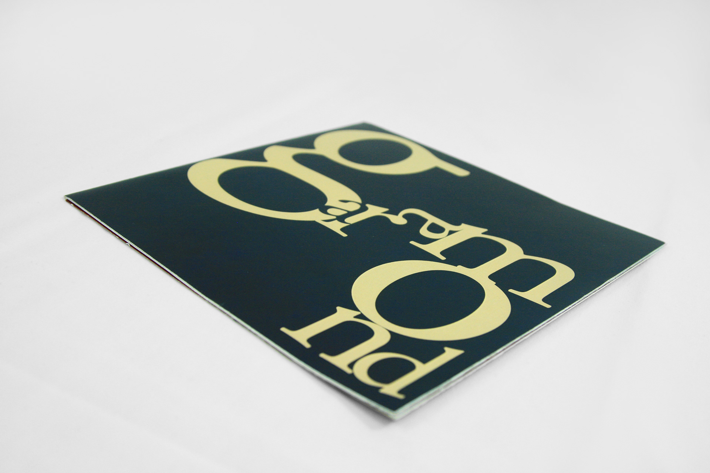

TYPE SPECIMEN BOOKLET
I did in-depth research on the Garamond typeface and in conjuction with my 6 page research paper, I created an 8 page type specimen booklet that showcases the letterforms, numerals, and punctuation of the font. It also includes information about the designer as well as key points about the history of the typeface.
YEAR
2019
SOFTWARES USED
Illustrator
Indesign
YEAR
2019
SOFTWARES USED
Illustrator
Indesign

FEATURES
The brochure features a gatefold that opens to a timeline that contains significant dates about the creation and evolution of Garamond. The images on the brochure were created using parts of the actual letterforms of Garamond. I primarily used sections of the letters O, C, I, S, and J.